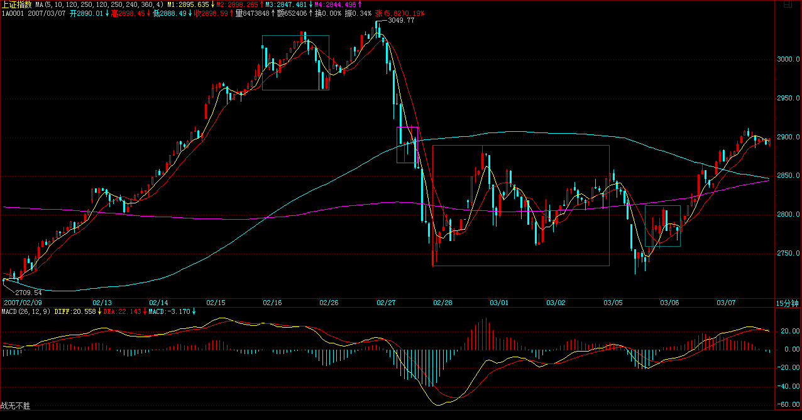
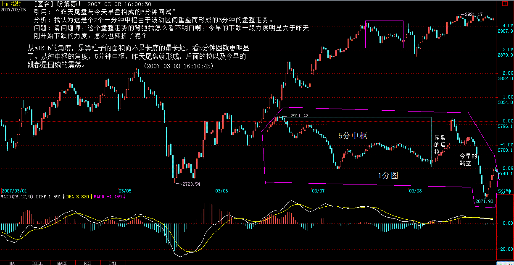

正文
原网址 : http://blog.sina.com.cn/s/blog_486e105c0100090b.html
注：本文答疑解释了对走势分解的两种分析方法，一种方法按中枢来分析，允许中枢延伸分析走势。另外一种方法用走势类型分析，如对 a+B+b 的盘整走势类型，用柱子的面积来分析盘背。如有上涨或者下跌走势，那就用相关的走势来分析。“ 盼解惑 ”(2007-03-08 16:10:43) 的答疑 和 “ 缠文观止 ”(2007-03-08 16:38:56)
面首，一种职业；怨男，一种自虐。面首常有，怨男更常有。怨男，无分贵贱，无关学问。李后主（李煜），一国之君，人生长恨水长东地成就一代怨词，也算怨得有点声色；以后主为隔代知己的王某 ( 王国维），一头扑入不能长东只能长恨的死水里，比起清华园后来那些因阴阳失调而成就的千万怨男，也算怨得有点动静。清华男的脑子多不好使，在逻辑与数据的迷宫中迷失自我，是否与此阴阳失调相关且不论，但北大男如面首，清华男如怨男，却是不争的事实。宁要面首，莫要怨男，这也是北大比清华出色的地方。站在消费者的角度，面首总比怨男可爱得多。最不可爱的，当然就是怨男里的面首或面首中的怨男。那一片记录着中国人耻辱的残园附近的两种男人，就如同股市中的失败男人一样。股市中的失败男人，只有两种，面首与怨男，当然也就包括其中最不可爱的两者交集。
面首，被股票所消费者，被股票所玩弄者，被股票忽悠着从阳亢到阳痿间不断晃悠者。非怨男的面首有一好处，就算不太精液了也还很敬业，到处想方设法也要找点这鞭那鞭嚼嚼又可以继续傻忽忽、乐呵呵地敬业了。怨男，有两种，一种是当面首时被用废的，能用的只剩下嘴了，或者去当当股评卖卖假阳具去骗骗人，或者每天对着股市这镜子顾影自怜，或者就编编故事对着往昔的梦境再梦里阳亢一把；另一种是拍 AV 的、说评书的、当狗崽的、玩裸聊的，总之，都不是能玩真的，都是些企图用口眼就能制造快感的发育不良者。要快感就玩真的，真刀真枪来，总是当医疗器械的免费宣传者那算什么事？
无论面首或怨男，最大的共同点就是喜欢被玩，当一种面首或怨男的密码被输入后，这面首或怨男的程序就自动运行。其人，不过是傀儡而已，但竟然也乐在其中，也算天下之奇事。不摆脱这各种情绪操控的傀儡命运，就无人可言，但更可怕的的是，很多人却深陷其中而不能自拔，甚至不能自知。很多人，从一开始就自闭其路，一开始就是死路一条。例如，自以为高明地把股市当赌场 ( 吴敬琏），这样，一双赌眼看股市，怎么闹都是一条赌命，其命运就由其最开始的所谓高明所决定了。“ 闻见学行 ”，有如此闻，而有如此见，复有如此学，终有如此行，如此股市就以各人自渎的想象成为众多股市参与者的坟墓。
正闻、正见、正学、正行，无此四正，要在股市里终有成就，无有是处 [ 注：没有这个道理的意思，来源于佛教：自己未度，而能度人，无有是处 ]。正，不是正确的意思，所谓正确，不过是名言之争辩。正，是正是，是当下，只有当下，才是正是，才是这个。要当下闻、当下见、当下学、当下行，才是正闻、正见、正学、正行。而对于股市来说，只有走势是当下的，离开走势，一切都与当下无关。一切 “ 闻见学行 ”，只能依走势而 “ 闻见学行 ”，离开此，都是瞎闹。不符合当下走势的，上帝说正确也白搭。由此，入股市者，首先就要把所有面首、怨男的情绪、基因抛掉，化掉，如何能办到？也离不开当下，离不开在当下的走势中磨练。当下的走势就是一切，一切股市的秘密就在其中。这秘密，是大道，没有任何的遮掩，对任何人都一视同仁、明明白白地彰显，你还向外求什么？而无数的人，还是要争着玩骑驴找驴的游戏。
在股市中，钱的大小根本不重要，亏损是按百分比的，所有的钱，无论你是从哪里涨起来的，在任何一个位置，变成 0 的几率是一样的。这个几率是当下存在的，任何人、任何时候都不可能摆脱，这是 “ 不患 ” 的。当下的走势，就如同一把飞速滚动的屠刀，任何与之相反的，都在屠杀之列，而与之顺着的，那被屠的血就成了最好的盛宴。也就是说，一旦你的操作，陷入一种与当下走势相反的状态，任何该种状态的延续就意味着死亡，一旦进入这种状态，唯一正确的选择就是离开。当然，走势是千变万化而有级别性的，任何的当下，并不就意味着 1 秒种的变化，而是根据你的资金以及承受所可能的操作级别来决定的。一直所说的操作级别，就是针对此而说。例如，你根据资金等情况，决定自己的操作级别是 30 分钟的，那 30 分钟所有可能发生的走势都在你的计算之中，一旦你已有的操作出现与 30 分钟实际当下走势相反的情况，那么就意味着你将进入了一个 30 分钟级别的屠杀机器里。这种情况下，只有一种选择，就是用最快的时间退出。
注意，这不是止蚀，而是一种野兽般的反应。走势如同森林，野兽在其中有着天生般的对危险的直觉，这种危险的直觉总是在危险没发生之前，而野兽更伟大的本事在于，一旦危险过去，新的觅食又将开始，原来的危险过去就过去了，不会有任何心理的阴影，只是让对危险的知觉更加强大。没有任何走势是值得恐惧的，如果你还对任何走势有所恐惧、有所惊喜，那么，你还是面首、怨男级别的，那就继续在当下的走势中磨练，让这一切恐惧、惊喜灰飞湮灭。这里，只需要正闻、正见、正学、正行，而不要面首与怨男，即使面首比怨男要可爱一丁点。
每日解盘 (2007-03-07 15:12:14 )
大盘没什么可说的，上下午分别在 2888、2915 下震荡，十分标准。注意，来这里别把本 ID 当股评，现在是指导各位根据当下的情况培养自己的当下判断。如果真有心学习的，今天盘中 1、5、15、30、60 分钟等级别之间的综合关系，以及相应的判断，就有一个最直接的感觉了，这才是真工夫。
大盘只要不有效站稳 2915，最终形成第三类买点，则下面这中枢依然不能摆脱。说得简单点，现在大盘无非两种盘整方式，一种就在 2915 附近重新回跌，甚至继续破底形成之字型，一种就是先上 3000，然后再回拉形成平台型，这些都不用考虑，当下就知道了。 (2007-03-07 15:12:14)
大盘的 1、5、15、30、60 分钟级别之间的综合关系展示图

每日解盘 (2007-03-08 15:30:24)
=====《论语》详解：给所有曲解孔子的人（55） 486e105c0100090r=====
昨天尾盘与今天早盘构成的 5 分钟回试，没有重新跌回 2858 原 30 分钟中枢，就构成完美的第三类买点，其后的走势都很规范。2915 点的压力在尾盘突破，但还需要确认。从纯技术的角度，现在依然存在重新跌回这 5 分钟中枢，从而扩展成新的 30 分钟中枢的可能，所以 2915 是不能有效跌破的，否则将扩展出新的 30 分钟中枢，这样走势的演化就复杂了。
各股没什么可说的，还是板块轮动，每个板块的时间都不长，所以千万不能追高，一定要在买点买。对于散户来说，没必要参与板块的调整。不过，也不能太短，要把握其度，例如 5 分钟上还是主升，见一个 1 分钟以下的背驰就跑，这样大的利润可能都吃不到了，所以必须综合地判断，这是一个艰苦的磨练过程，必须不断交易而达到技术的完美。
最近现实中，正构建一个传媒平台，和汉奸打仗，必须对舆论有所引导，这些事情是必须干的。 (2007-03-08 15:30:24)
[ 匿名 ] 悠悠悠哉 2007-03-07 15:13:15
a+A+b+B+c 中 A B 是中枢？ 那 a＋A＋b 和 b＋B＋c 是不是中枢那？？？
=
前面是，后面不是。 (2007-03-07 15:16:36)
[ 匿名 ] 12dfdf
2007-3-8 15:29
-
“ 注意，次级别的前三个走势类型都是完成的才构成该级别的缠中说禅走势中枢，完成的走势类型，在次级别图上是很明显的，根本就不用着再看次级别下面级别的图了。”
所以请教缠主完成的走势类型有哪些特征，可以很明显地看出来，而不用看次级别的图了？
==
不谈级别，那什么都别谈了，因为只能是瞎谈。
-
“ 缠中说禅技术分析基本原理二 ”：任何级别任何完成的走势类型，必然包含一个以上的缠中说禅走势中枢。 “ 缠中说禅走势分解定理二 “：任何级别的任何走势类型，都至少由三段以上次级别走势类型构成。
请问缠主：“ 基本原理二 ” 中 “ 包含一个以上 ” 应该理解成 “ 包含一个以上（包括
==
至少一个。 (2007-03-08 15:41:59)
[ 匿名 ] 草草 2007-03-08 15:42:22 老大：怎么样确认是 (30 分 ) 第三买点啊，我今天也判断了两个关键位置：2871 和 2858，但到了 2871 回来的时候，总怕而次下探击穿，所以只买了一半的货，怎么样才能确认回调不破中枢高点？
==
看次级别内部走势。和上几次说离开力度不够的判断是一样的。 (2007-03-08 15:45:09)
缠中说禅 2007-03-08 15:51:01
[ 匿名 ] 插班生 2007-03-08 15:44:34
楼主，第三类是第一次下试就能确定了． 我还以为要两次呢，糊涂．
==
昨天尾盘那次不算？ 这是典型的之字型。
（注：昨天尾盘和今天早上合在一起形成 5 分中枢，构成下面 30 分中枢的三买 )
(2007-03-08 15:51:33)
[ 匿名 ] 后知后觉
2007-03-08 15:56:19 禅主，节日快乐！ 全体女性用品（－－男同学）祝禅主和女同学节日快乐！！
如果跌回 5 分钟中枢，就形成了 30 分钟第三段了，就又要看中枢走完的背驰去向了，是这样吗？
==
就按中枢里的操作方法，前几天那震荡不是演示过好几次了？教你炒股票 33：走势的多义性 (2007-03-08 15:59:11)
[ 匿名 ] 三九
2007-03-08 15:56:07
“ 一个 30 分钟的 a+A+b+B+c 的向上走势，你不可能在 A 走出来后就说一定有 B，这样等于是在预测，等于假设一种神秘的力量在确保 B 的必然存在，而这是不可能的。那么，怎么知道 b 段里走还是不走？这很简单，这不需要预测，因为 b 段是否走，不是由你的喜好决定的，而是由 b 段当下的走势决定的。如果 b 段和 a 段相比，出现明显的背驰，那就意味着要走，否则，就不走。” LZ 好 , 我记得你前面说过背驰必须出现在第二个中枢之后 , 这和上面的说法是否有矛盾 ?
==
这有什么矛盾？第一个中枢之后的是盘整背驰。 (2007-03-08 16:00:46)
[ 匿名 ] 盼解惑！谢谢
2007-03-08 16:00:50 引用：“ 昨天尾盘与今天早盘构成的 5 分钟回试 ” 分析：我认为这是个 2 个一分钟中枢由于波动区间重叠而形成的 5 分钟的盘整走势。 问题：请问缠师，这个盘整走势的背弛我怎么看不明白啊，今早的下跌一段力度明显大于昨天刚开始下跌的力度，怎么也转折了呢？
== 从 a+B+b 的角度，是算柱子的面积而不是长度的最长处，看 5 分钟图就更明显了。从纯中枢的角度，5 分钟中枢，昨天尾盘就形成，后面的拉以及今早的跳都是围绕的震荡。 (2007-03-08 16:10:43)

[ 匿名 ] 缠文观止
2007-03-08 15:34:28
楼主好！关于走势和中枢的级别问题，经反复阅读原文和大家讨论，有以下结论，请楼主指正：
同级别的三个走势的连接，比如 “ 趋势＋盘整＋趋势 ”，盘整的中枢级别高于趋势的中枢级别。为方便清晰起见，不用次级别等概念，用实际级别举例来说如下： “ 日线趋势＋日线盘整＋日线趋势 ” 组合中，日线趋势至少包含两个 “ 日线中枢 ”，而日线盘整只包含一个 “ 周线中枢 ”。进一步推论有日线盘整至少包含三个 “ 日线中枢 ”。
根据以上结论，按中枢的定义，周线中枢的组合可以有： “ 日线趋势＋日线反趋势＋日线趋势 ”， “ 日线趋势＋日线盘整＋日线反趋势 ”， “ 日线趋势＋日线盘整＋日线趋势 ”， “ 日线盘整＋日线盘整＋日线盘整 ”， 。。。。。。 等等
但从周线级别角度看，上述组合如果是一个完成的次级走势的话，仅仅是一个日线盘整！这个组合中只包含了一个周线中枢！ 其中 “ 日线趋势＋日线盘整＋日线趋势 ” 组合，站在周线角度看如果是一个未完成的走势的话，则可能是周线趋势的一部分，也可能是周线盘整中的一段。 所以日线走势组合连接的含义，只有在周线级角度看才有意义。站在两个级别角度分别看，则有多义性。
以上走势组合只考虑了同级走势组合连接的情况。对于不同级别走势的连接情况怎么分析，还请楼主指教。
==
临走回答一下。你不能把两种不搭界的看法混在一起。按中枢看，就严格按中枢的定义来，其后在中枢结束前的所有走势，都可以看成是围绕中枢的震荡过程。至于仔细的分类，以后会说到。
这个问题，上面回答，昨天开始的这个 5 分钟中枢时已经有所回答。这个中枢，可以有两种看法，a+B+b，这样就是走势组合的看法，这样有一种判断。而单纯从中枢看，前三段就是中枢，后面是震荡，这又是一种看法，这就用离开的力度来判断。两种方法如果都有同样的结论，那自然就是最准确的结论，这个区间套的方式是一样的。
具体以后课程都会说到，必须走了，再见。 (2007-03-08 16:38:56)

明白的同学受累再指教一下，糊涂了。
CCTV： 2007-03-08 17:13:18 这 很简单呀。a+B+b，就是用盘整背驰判断 b 是不是背驰。中枢看法，像 B 里有三段，那 a 和 B 里的前两段也构成中枢，那就可以把 B 余下部分和 b 都看成是前三段的震荡，那就可以用离开的力度来判断，多义性那节课说的很清楚，这两种方法都得到同样的结论。我的理解就是这样，我相信我是理解对了，没什么困难呀！
大盘 [ 匿名 ] 你的样子
2007-03-08 23:34:19 cctv 你好，我有个问题，关于第三买点的，向你请教， 举例说如果以日线级别离开周线中枢，是不是必须日线级别背驰后形成的日线回调才能构成第三买点，还是说只要走出周线中枢，第一个日线级别的中枢完成就是周线第三买点。别的级别也是一样。
作为周线中枢的第三买点，你的理解有误区。满足第三买点的三个条件是先形成第一个周线中枢，然后是日线走势（不管当中价格日线中枢）向上离开周线中枢并走完，接着是一个走完的日线走势回试低点大于第一个周线中枢的高点，就构成周线中枢的第三买点。
因此对于周线中枢的第三买点，是离开第一个周线中枢而不是离开中的第一个日线中枢。其它级别意思一样。
2007-3-9 00:20
大盘
写给初学中枢的朋友：
初学中枢的朋友，根据我个人的体会，有以下三个难关：
-
对中枢概念的字面定义还没有过关，所以对中枢连个直观的感觉都没有。
解决方法：找一个刚刚上市的股票看例如 5 分钟的图表来学习，因为新股没有历史数据，从头开始，比较好分析。并可同时咨询博主或者其它掌握的朋友来加深理解，有时间我也可以用示意图来图解中枢
-
明白了中枢的字面含义，但是在实际的走势图上面，无法从某一参考点开始确定中枢开始的三段，即使知道了确定形成中枢的三段，但对于级别、中枢与趋势和盘整的关系也是不能分清楚
解决方法：也可以找一个新股来学习，或者直接从一个在日线图上明显看到的底部或者顶部开始作为你开始中枢分析的一个参考点，因为这样的顶部或者底部接下来的第 2 个走势段通常就是某级别中枢开始的第 1 段（但不必然是），至于说是从第 2 个走势段开始，是因为顶部或者底部背离后接下来的第 1 个与前面同级别的走势段通常是连接段。
-
对于中枢的高级内容，也就是中枢的运动方式，例如中枢延伸、级别扩展，中枢的连接，不同级别的中枢和前后中枢的相互关系不能明白
解决方法：在理解了单个中枢的含义后，中枢的高级内容如延伸、级别扩展以及可能构成的走势组合自己在纸上对照博主的定义画一画就会慢慢明白。可以开始画一个级别的趋势、盘整，然后把他们组合各种可能的走势。有时间这也是我要图解中枢的内容。
而在理解了走势的多义性后，应该就可以逐渐不使用趋势和盘整之类的概念，并且用对当下走势结合历史走势来决定买卖，而不是事先预测一个方案，即使预测，也要考虑到各种的可能性。
2007-3-9 00:08
对不起，今天不能聊了，马上要出门，晚上如果早回来再说，有问题先留下。
先下，再见。 (2007-03-07 15:19:01)
[ 匿名 ] 淡定
2007-03-08 15:41:18 楼主 , 节日快乐 !!!
=
节日快乐 (2007-03-08 15:42:33)
[ 匿名 ] 满目山河
2007-03-08 15:45:36
传媒平台？是电视专栏还是？
==
不是，本 ID 不会抛头露脸的，台面上的事情还需要本 ID 干就太没意思了。 (2007-03-08 15:49:21)
[ 匿名 ] 三藏
2007-03-08 15:31:49
老大，金融股什么时候动动啊？？ 11.53 买的民生银行，今天一天不死不活的
==
前两天不是动了？现在是板块轮动，没必要连续拉抬一个板块，这样对修复人气没好处，也容易受到正面攻击。所以一直强调，没必要追高，才能把握轮动节奏。动过的，等调整好了，自然又动了。 (2007-03-08 15:57:40)
[ 匿名 ] 黄土高坡的白杨
2007-03-08 15:59:45
十室之邑。“ 十 ”，《说文》，十是数之具，包括东西南北中央，极言其大，也就是囊括所有的意思。
李泽厚：孔子说：“ 十户人家的小地方，一定也有像我这样忠实可靠的人，只是不像我这么喜欢学习罢了。”
平时理解的 “ 十 ”，以为就是小地方的意思。看来完全弄反了。神仙姐姐精力真实旺盛，将这些刨根问底，搞得很清楚啊。
==
一般说少的，都用三之类的，例如，楚虽三户，古代对数字的用法很仔细的，不是随便就用一个十，在古代，数字是有神圣性的。 (2007-03-08 16:02:56)
[ 匿名 ] CCTV
2007-03-08 15:43:49 妹子，本周超级成功，每天换两股飘，连续 10 次操作全部成功，上面都有记录，都是妹子的理论厉害，谢谢啦。
==
不能太短，如果主升段都错过了，这种换股没意义。 (2007-03-08 16:13:13)
缠中说禅
2007-03-08 15:30:24
昨天尾盘与今天早盘构成的 5 分钟回试，没有重新跌回 2858 原 30 分钟中枢，就构成完美的第三类买点，其后的走势都很规范。2915 点的压力在尾盘突破，但还需要确认。从纯技术的角度，现在依然存在重新跌回这 5 分钟中枢，从而扩展成新的 30 分钟中枢的可能，所以 2915 是不能有效跌破的，否则将扩展出新的 30 分钟中枢，这样走势的演化就复杂了。
各股没什么可说的，还是板块轮动，每个板块的时间都不长，所以千万不能追高，一定要在买点买。对于散户来说，没必要参与板块的调整。不过，也不能太短，要把握其度，例如 5 分钟上还是主升，见一个 1 分钟以下的背驰就跑，这样大的利润可能都吃不到了，所以必须综合地判断，这是一个艰苦的磨练过程，必须不断交易而达到技术的完美。
最近现实中，正构建一个传媒平台，和汉奸打仗，必须对舆论有所引导，这些事情是必须干的。
(2007-03-08 16:15:44)
[ 匿名 ] L8453
2007-03-08 15:34:03
盘啊盘，被晕了一天。
==
走势很规范，晕是磨练不够，所以要不断在当下磨练，光学概念没用的。 (2007-03-08 16:21:11)
2007-03-08 15:38:10 老大， 关于您回复的大盘 1 月 9 日到 2 月 6 日是日线中枢，这么说是不是可以认为 5 分级别的 9 段就构成了日线级别的中枢。也就是说次次级别当延伸了 6 段，加上原来次次级别的中枢三段，这时就构成了本级中枢。 是这样吗？
== 是 1 月 4 日开始，正好 9 段 5 分钟走势。 (2007-03-08 16:23:09)
[ 匿名 ] 乱麻
2007-03-08 16:22:23
缠主是中国人，理由如下： 1. 痛恨汉奸； 2. 喜欢研究《论语》； 3. 文言文说的比白话文好，缠主的白话文实在拗口，基本上搞不清在说什么。 4. 我注意到一个现象，国外一些技术教程看上去浅显易懂，把很复杂的道理说得简单明白，国内专家的文章把简单明白的道理说得云山雾罩，生怕人家说他不专业。从这点来看，缠主可确定为中国国籍。
呵呵，开个玩笑，得罪了莫怪！
==
国外的所有技术理论本 ID 都研究过，和本 ID 的根本不是一个路子，这是一个公理化系统，如果你是文科生，那好好换一个数学脑子来，如果已经是理科生，那回学校重读。
理论是最基础的，关键是实践中的当下，这是另一个层次的东西，鬼佬的理论，根本达不到这个层次。 (2007-03-08 16:26:49)
[ 匿名 ] 六同
2007-03-08 15:43:49 想听 LZ 的 B 股研判 … 谢谢 !
==
和 A 股大同小异，就没必要专门说了。 (2007-03-08 16:27:54)
好，四点半，必须走了，最近很忙，先下，再见。 (2007-03-08 16:29:59)